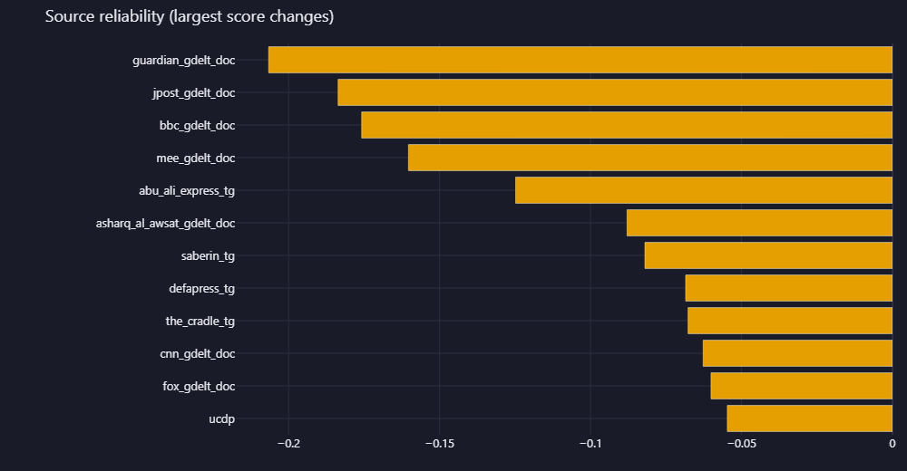

Assurance
How the results are checked
introduction
Confidence levels
what a confidence level says

Reproducibility
reproducibility
Checks
checks
Source audit
the source audit

Assurance
introduction
what a confidence level says
reproducibility
checks
the source audit
